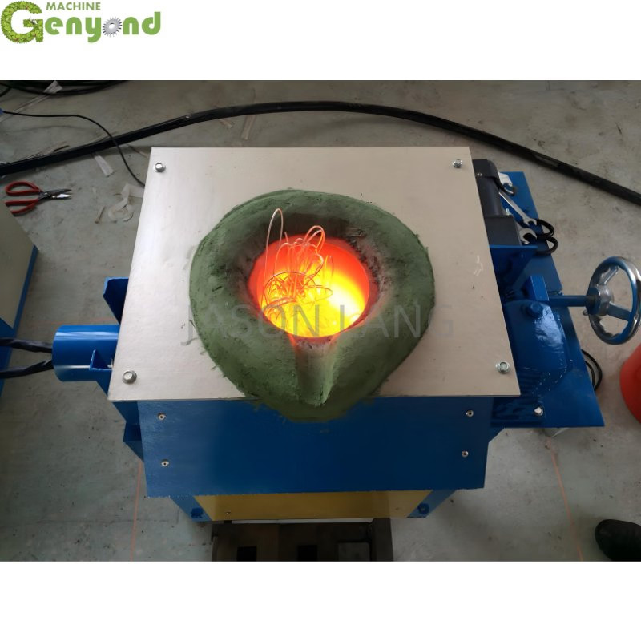
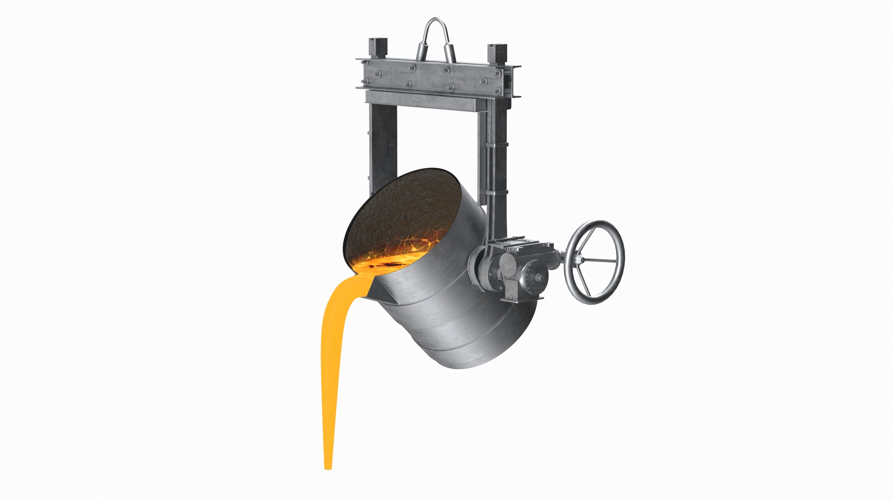
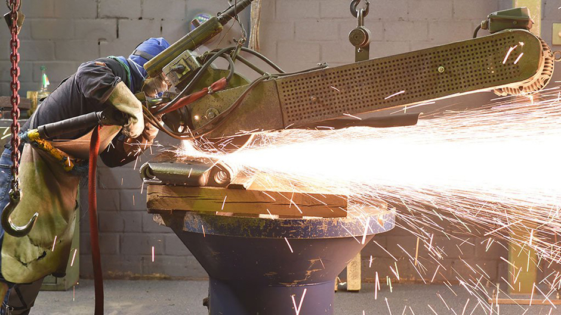

6.1. 실무 용어#
6.1.1. 주조 분야#
주조 분야에서는 용어가 중요하다. 신뢰도의 차이가 크기 때문이다.
“주조 공정은 용탕을 주형에 주탕한 뒤 냉각·탈형을 거쳐 제품을 만드는 과정이며, 특히 주탕과 물류 과정은 자동화가 가장 필요한 핵심 구간입니다.”
주조 (Casting): 금속을 녹여 주형에 부어 형상을 만드는 공정
용탕 (Molten Metal): 녹은 금속 상태
주형 (Mold): 금속을 붓는 틀
주물 (Casting Product): 최종 결과물
용해 (Melting): 금속을 고온에서 녹여 액체 상태로 만드는 과정
합금 (Alloy): 두 가지 이상의 금속(또는 금속 + 비금속)을 혼합한 재료
슬래그 (Slag): 용해 과정에서 발생하는 불순물로, 표면에 떠올라 제거됨
주형 제작 (Molding): 주물을 만들기 위한 틀을 제작하는 과정
패턴 (Pattern): 주형을 만들기 위한 원형 모델
코어 (Core): 주물 내부의 빈 공간을 형성하기 위한 구조물
사형 주조 (Sand Casting): 모래를 이용해 주형을 만드는 방식
금형 주조 (Die Casting): 금속 금형을 사용하는 고정밀 주조 방식

주탕 시스템 (Pouring System): 용탕이 주형 내부로 흐르는 경로 시스템
주탕 (Pouring): 용탕을 주형에 붓는 과정
래들 (Ladle): 쇳물 담는 용기
탕구 (Sprue): 용탕이 처음 들어가는 수직 통로
러너 (Runner): 용탕을 여러 방향으로 분배하는 수평 통로
게이트 (Gate): 실제 제품 형상으로 용탕이 들어가는 입구
게이트 시스템 (Gating System): 용탕 흐르는 통로
라이저 (Riser): 수축 보정용 저장 공간, 응고 시 수축을 보완하기 위한 용탕 저장부

냉각/탈형
냉각/응고 (Cooling / Solidification): 용탕이 식으면서 고체로 변하는 과정
탈형(Shakeout / Mold Removal): 냉각된 주물에서 주형을 제거하는 과정
후처리 (Finishing): 주물의 표면을 다듬고 불필요한 부분을 제거하는 과정
페틀링 (Fettling): 주물 표면 정리 작업
디버링 (Deburring): 날카로운 모서리 제거
샷 블라스트 (Shot Blasting): 표면 청소, 표면의 불순물 제거 및 마감 처리

검사 (Inspection): 제품의 품질을 확인하는 과정
외관 검사 (Visual Inspection): 눈으로 결함을 확인
비파괴 검사 (NDT, Non-Destructive Testing): X-ray, 초음파 등을 이용해 내부 결함 검사


결함 (Defect): 주조 과정에서 발생하는 품질 문제
기공 (Porosity): 내부에 기포나 구멍이 생기는 현상
수축 결함 (Shrinkage): 응고 과정에서 부피 감소로 발생하는 결함
콜드 셧 (Cold Shut): 용탕이 제대로 결합되지 못한 상태
미스런 (Misrun): 용탕이 주형을 끝까지 채우지 못한 현상
설비 및 자동화 관련
래들 (Ladle): 용탕을 운반하고 붓는 용기
로봇 셀 (Robot Cell): 로봇을 중심으로 구성된 작업 단위 시스템
AMR (Autonomous Mobile Robot): 자율주행 기반 물류 이동 로봇
비전 시스템 (Vision System): 카메라 기반 인식 및 검사 시스템
공정 모니터링 (Process Monitoring): 센서를 통해 공정 상태를 실시간으로 확인하는 시스템